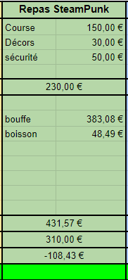

.jpg)
.jpg)
.jpg)
Le thème du repas était: Steampunk. Nous avons donc élaboré un menu dans l'ère victorienne / anglaise.
Nous avons eu environ 80 personnes au repas, ce qui est une bonne réussite (les 2A ne sont plus là en juin). Les gens présents ont adorés le menus. Faire un repas en juin est parfait, on prépare deux fois moins de plats car les 2A ne sont plus là. Ainsi, il n'y a pas à cuisiner de nuit, en panique, en courant, ... on a pu en profiter pour faire un repas plus travailler.
Voici le menu du repas:
Voici l'excel détaillé du repas:
Excel du repasVoici l'excel détaillé des courses du repas
Excel des courses du repasAfin de mettre le cercle dans une ambiance steampunk, nous avons découpé une centaine d'engrenages de toute forme au fablab à la découpe laser. (Les engrenages sont toujours disponibles dans le local). Nous avons aussi réalisé sur l'estrade une grande locomotive décorée dans le thème. Un grand dirigeable a été suspendu au plafond du cercle.
.jpg)
Voici la répartition du budget du repas. Le prix du repas était de 5€. Nous avions prévu pour 80 personnes et nous avons eu le bon nombre de gens. Nous avons dépensé 108,43€ de moins que prévu dans le budget prévisionnel. Nous avons donc respecté le budget alloué à l'évent. L'argent injecté sert notamment à payer les boissons. Des gens inscrits ne sont pas venus, et comme d'habitude pas mal de gens sont venus à la fin s'en s'être inscrit. On avait anticipé en prévoyant un peu plus de repas que de gens inscrits, afin de prendre en compte les staffeurs aussi. Nous n'avons rien dépensé dans les décors. Il restait pas mal de peinture et autre affaire au local BDA.
